Times Square (1940). Photographed by Lou Stoumen.
Times Square (1940). Photographed by Lou Stoumen.

M27 bus on Broadway and West 49th, 1981
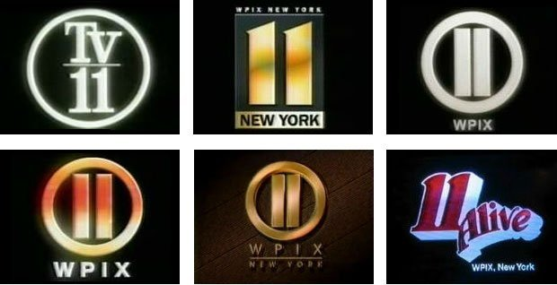


If you grew up in NYC in the 60s/70s/80s, WPIX (channel 11) was a parent, a teacher, and a warm opiate. Odd Couple at 11; Honeymooners at 11:30.

Man in the Rain. New York City. 1952.
Photographer: Ruth Orkin

Some sort of weird race involving buckets, 1947 near Yankee Stadium.

Swing dancing began during the Harlem Renaissance in New York posted 11-25-2013
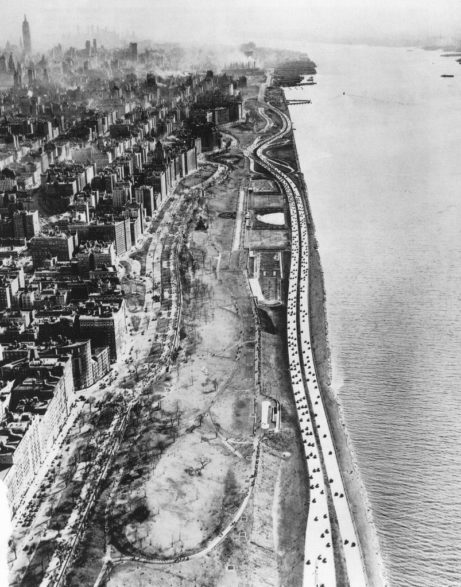
Henry Hudson Parkway, 1937.

Kyle, 1986 on the 1 train.
http://weber-street-photography.com/category/graffiti-nyc-tags/

The stuff nightmares are made of. Macy’s Thanksgiving parade, 1929.
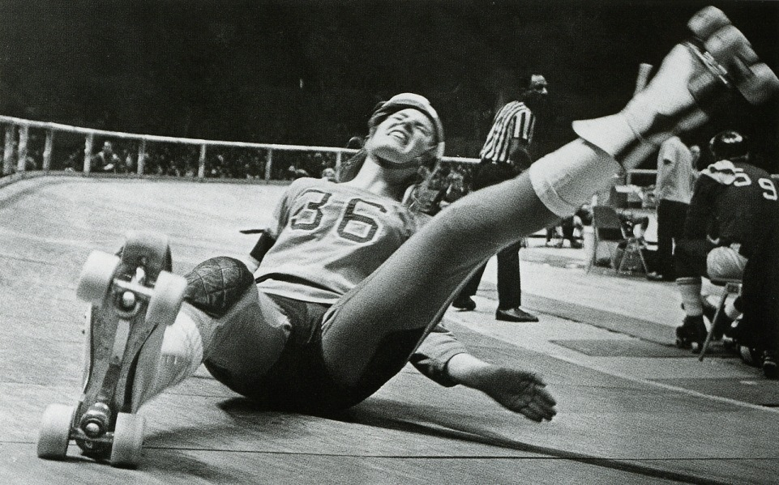
Roller derby @ Madison Square Garden, 1970. Ouch.
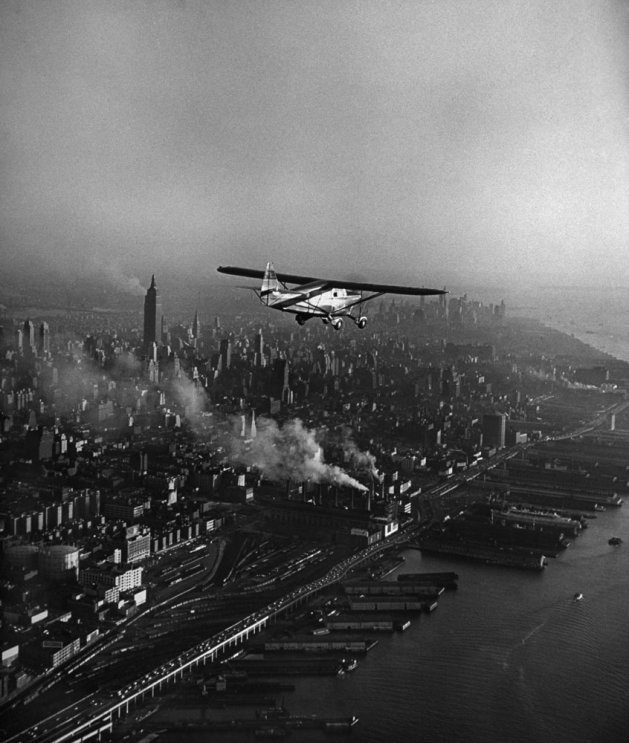
Sightseeing above Manhattan, 1949.

100 degrees on Columbus Circle, 1940s.

2 train, 1979.
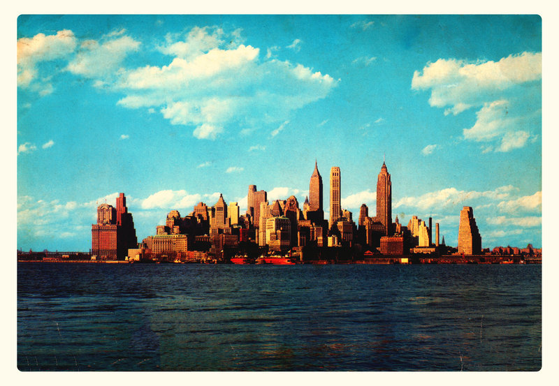
NYC postcard from 1965

5th Avenue, Midtown 1975
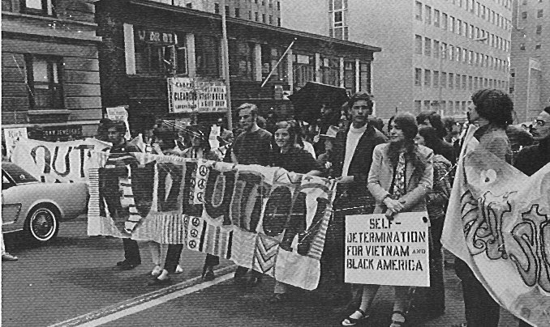
Columbia University students protest the war, 1968. (Amsterdam Ave and 116th Street)
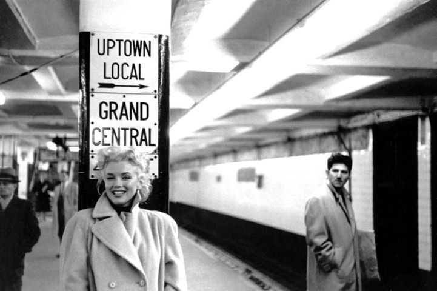
ain’t she sweet

East 14th St., 1980s.
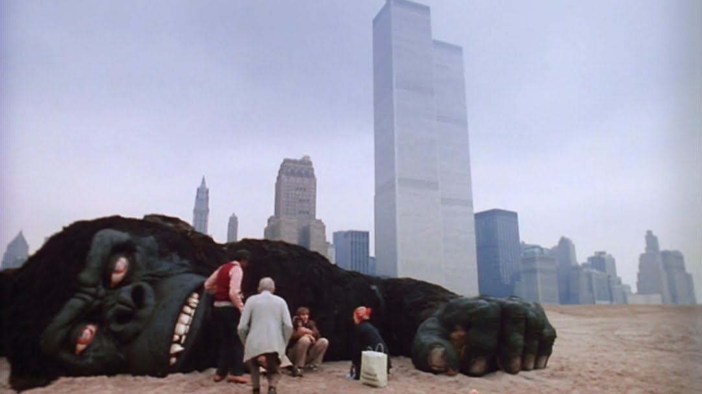
WTC and giant monkey.

Ed Koch, in all his glory.

Sci-fi makes my butt itch.
NYC, 1986.
Ronald Reis - Greenwich Village, 1964

This graffiti bores her.
My favorite part of this pic is the candy machine in the background. Why were vending machines so much scarier in the 70s?

Susquehanna Hotel, New York, 1967
Self portrait in a third-floor room with glass
Danny Lyon
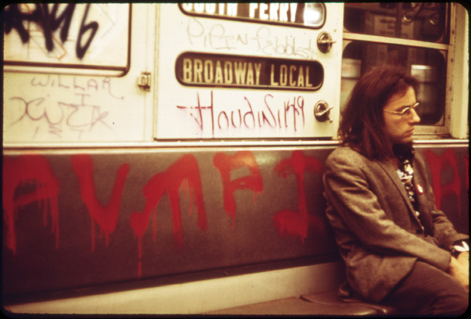
1973. Graffiti hadn’t gotten very sophisticated yet.
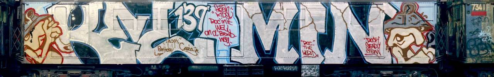
Kel / Min full car
New York City 1971 - Amsterdam Ave by Gentle***Giant on Flickr.

Tagged up train, 1984.
Cope, 4 train, 1982
Waitin’ on a train.

Times Sq. Burlesk 1987
Madonna with the world’s shittiest boombox, 1982 in NYC.

Times Square newsstand, 1982.

Delancey and Orchard, 1980.
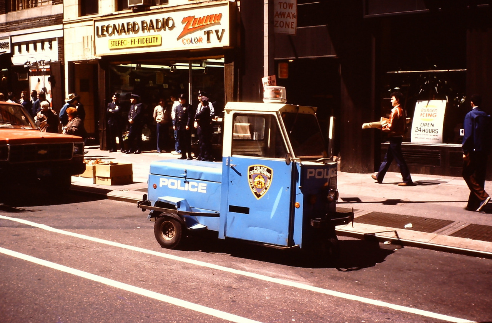
This would just be the most demeaning vehicle for a cop.